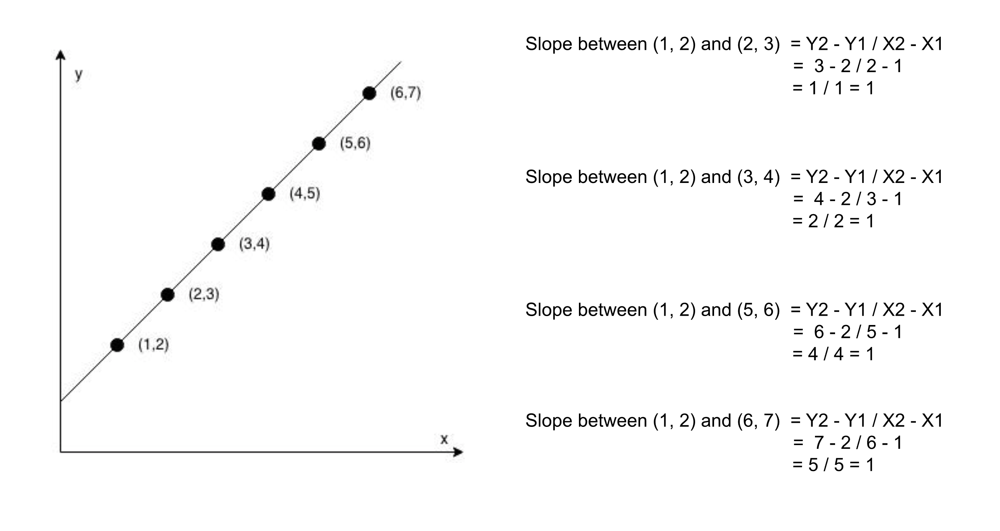

Intuition
We are given NN points (x,
y), where x and y represent the coordinates. We must return true if
the points make a straight line and false otherwise.
To solve this problem, we will use the slope property of a straight line. The slope of a line is defined as the change in Y coordinates with respect to the change in X coordinates of any two points on the line.
Slope = ΔYΔX\frac{\Delta Y}{\Delta X}
The property that can be used to solve this problem is that the slope between any two points on a straight line will
be the same. If we choose two points from the given list of points, the value of Slope as defined above
should be the same.
We don't actually need to check all pairs of points, but only all slopes relative to one fixed point. We will choose to measure from the point at index 00 and see if all slopes are the same.

So if we have three points p0, p1, p2, and the slope using p0 and p1 is ΔY1ΔX1\frac{\Delta Y1}{\Delta X1} and the slope between p0 and
p2 is ΔY2ΔX2\frac{\Delta Y2}{\Delta X2}, we will check if these two slopes are
equal or not, i.e. ΔY1ΔX1\frac{\Delta Y1}{\Delta X1} = ΔY2ΔX2\frac{\Delta Y2}{\Delta X2} . Since ΔX\Delta X can be zero
as well and in that case dividing by it would cause an issue. We can tweak the previous equality equation to convert
division into multiplication to avoid the divide by zero issues. The new equation would be:
ΔY1\Delta Y1 * ΔX2\Delta X2 = ΔY2\Delta Y2 * ΔX1\Delta X1
Algorithm
0 and 1.
2 to the end of the list, and for each index i find the
ΔX\Delta X, ΔY\Delta Y for
points at index 0 and i.
false.true.Implementation
Java
class Solution {
// Returns the delta Y.
int getYDiff(int[] a, int[] b) {
return a[1] - b[1];
}
// Returns the delta X.
int getXDiff(int[] a, int[] b) {
return a[0] - b[0];
}
public boolean checkStraightLine(int[][] coordinates) {
int deltaY = getYDiff(coordinates[1], coordinates[0]);
int deltaX = getXDiff(coordinates[1], coordinates[0]);
for (int i = 2; i < coordinates.length; i++) {
// Check if the slope between points 0 and i, is the same as between 0 and 1.
if (deltaY * getXDiff(coordinates[i], coordinates[0])
!= deltaX * getYDiff(coordinates[i], coordinates[0])) {
return false;
}
}
return true;
}
}
C++
class Solution {
public:
// Returns the delta Y.
int getYDiff(vector& a, vector& b) {
return a[1] - b[1];
}
// Returns the delta X.
int getXDiff(vector& a, vector& b) {
return a[0] - b[0];
}
bool checkStraightLine(vector>& coordinates) {
int deltaY = getYDiff(coordinates[1], coordinates[0]);
int deltaX = getXDiff(coordinates[1], coordinates[0]);
for (int i = 2; i < coordinates.size(); i++) {
// Check if the slope between points 0 and i, is the same as between 0 and 1.
if (deltaY * getXDiff(coordinates[i], coordinates[0])
!= deltaX * getYDiff(coordinates[i], coordinates[0])) {
return false;
}
}
return true;
}
};
Complexity Analysis
Here NN
is the number of points in the list coordinates.
Time complexity: O(N)O(N).
We need to iterate over every point only once, and hence the total time complexity would be equal to O(N)O(N).
Space complexity: O(1)O(1).
We don't require any extra space, and hence the space complexity would be constant.